產品簡介
AIDI介紹
AIDI（Artificial Intelligent Defect Inspection）是阿丘科技面向工業視覺場景打造的平臺軟體，用於解决複雜缺陷的定位、檢測、分類及字元識別等問題，具有强大的檢出能力。內置多種應用模組，無需程式設計，幫助用戶快速構建和反覆運算模型。能夠滿足不同應用場景的差異化需求，協助品質管控和良率提升。
○ 支援多樣化應用場景
○ 滿足項目核心指標要求
○ 易於集成
○ 零程式碼構建模型
系統要求
運行版系統要求
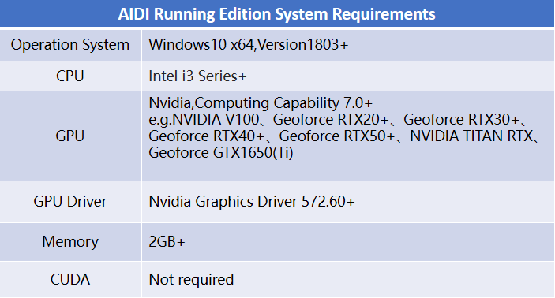
開發版系統要求
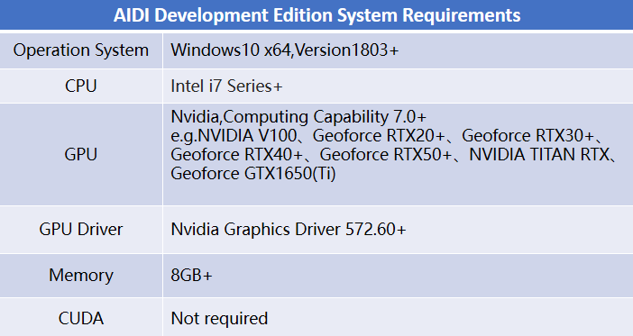
AIDI各算法塊場景介紹
AI算法模組
分割模組
精確到像素級的特徵檢測工具，用於在圖像中對複雜缺陷進行分割。可用於輸出檢測结果的圖形屬性（ex.面積、長邊、短邊等）應用場景：像素級ROI設定；不規則形狀目標檢測；小目標檢測 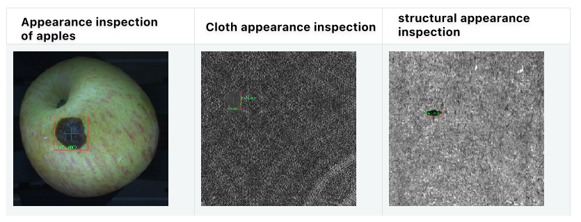
非監督分割模組
需要一定數量的OK樣本，通過學習識別出圖像中和OK樣本不同的地方，並輸出像素級缺陷檢出區域應用場景：NG樣本不易得，而OK樣本易得
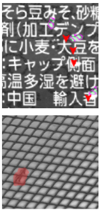
檢測模組
定位且對目標進行分類，可以檢測多種類型的缺陷應用場景：成塊特徵檢測；邊缘模糊缺陷的檢測；散點狀缺陷的檢測
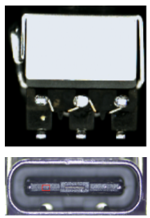
定位模組
定位圖像中的單個或多個目標的位置。應用場景：常用於在目標多樣、型態多樣等複雜場景中快速查找目標。
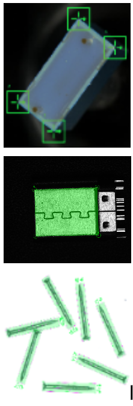
裝配檢查模組
檢查產品的裝配目標的個數、位置是否符合要求應用場景：部件完整度檢查
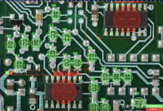
分類模組
用於在圖像中對不同的缺陷進行分類，也可以對圖片整體進行分级應用場景：缺陷分類、產品分等級
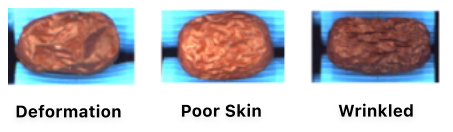
非監督分類模組
通過學習OK樣本，來找到缺陷圖，僅做圖像級判定，NG或者OK應用場景：產品存在未知缺陷（例如錯料）；產品有無的判斷（例如字元整體缺失、缺料）
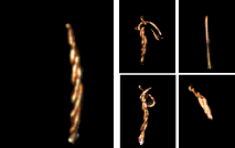
工具
輸入節點
工具介紹：專案的圖像存儲工具
使用場景：專案創建後，默認生成。用戶根據需要將來自同一個工位的圖像添加到本節點中，然後串接或者並聯其他模組進行檢測流程
綜合判定節點
工具介紹：以原圖為組織判定最終結果
使用場景：一个檢測面需要多條分支的檢測任務，然後需要最终設定判定條件，來定義什麼才是最終NG標準或者OK標準又或者其他自定義標準
 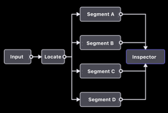
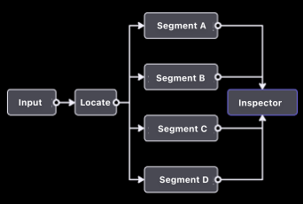
區域計算工具
工具介紹：高級工具，用來綜合多個模組的結果資訊，按照指定規則計算後給到其他算法工具
使用場景： 綜合後結果會給到綜合判定工具的場景： ○ 需要對綜合結果視覺化：通過區域計算工具 ○ 不需要對綜合結果視覺化：通過綜合判定工具
 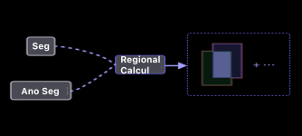
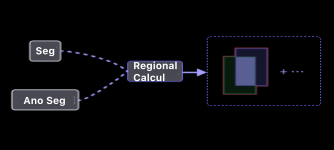
關鍵產品流程
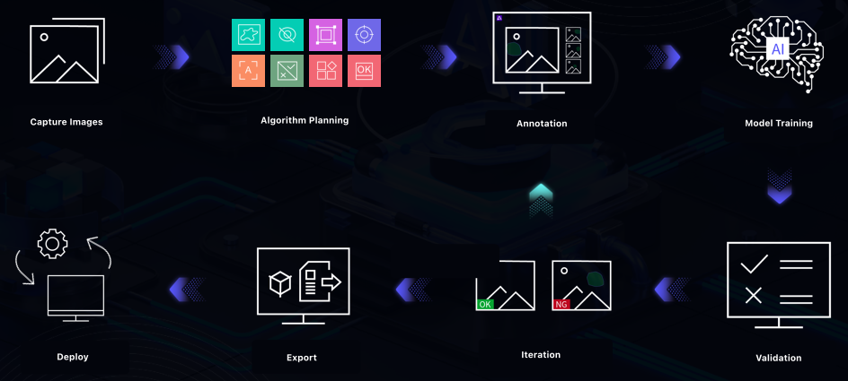
軟體安裝說明
安裝步驟
步驟 1 在下載目錄中解壓縮 AIDI-3.2.0-stable，並按兩下打開 AIDI_release_3.2.0_stable_20230927.exe。 得到如下介面並點擊下一步。
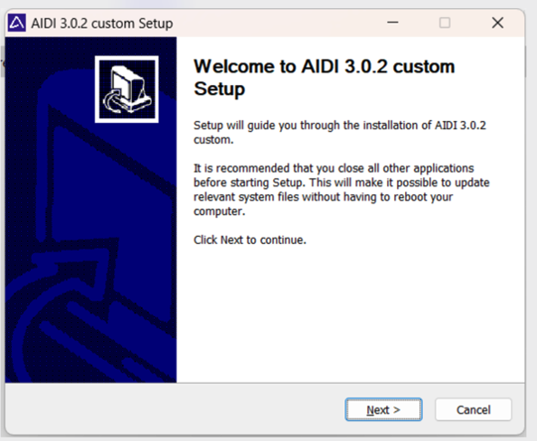
步驟 2 進入許可證協定頁並點擊[我接受]以進行下一步安裝。
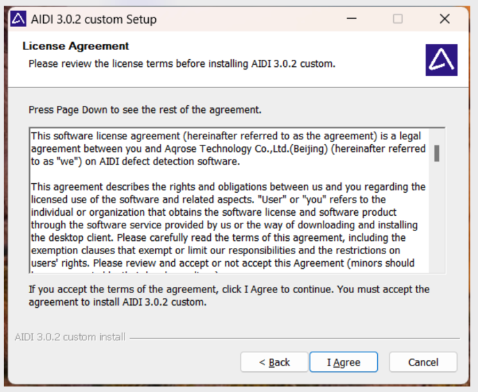
步驟 3 選擇合適的安裝路徑即可進行安裝。
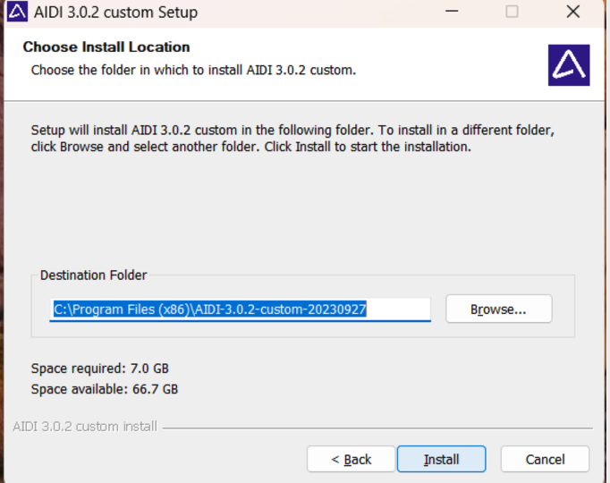
步驟 4 待安裝進度完成後，即完成 AIDI 安裝。
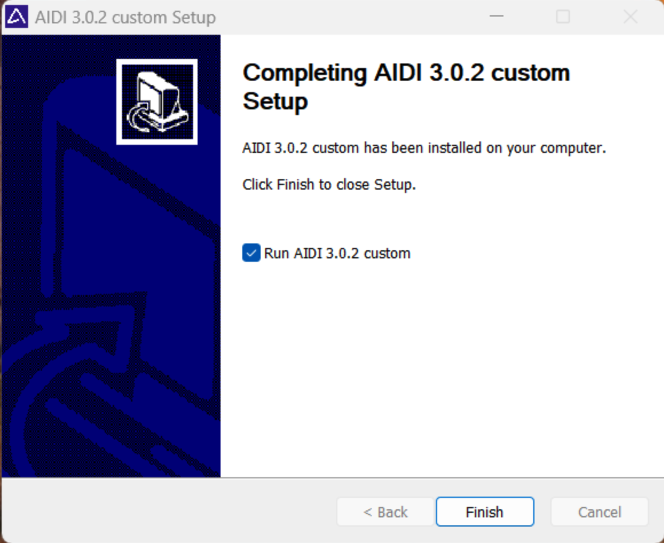
AIDI許可說明：
AIDI為收費軟體，無法直接打開。需使用硬體Dongle或軟加密授權碼啟動方可使用。 不同型號Dongle或授權碼，支援的功能有所差別。
硬體Dongle（硬許可）： 區分：AIDI訓練版軟體、AIDI運行版軟體 如用戶當前未獲取軟體許可（Dongle），請向對應的支援和對接人員（業務或技術工程師）申請獲取。
使用方法： （1）將硬體Dongle插在所要使用的設備上 （2）打開對應許可權的AIDI，即可使用訓練以及推理功能
注意事項：使用過程中請不要拔掉Dongle
到期提醒：7天
授權碼：
僅為試用提供，詳細諮詢：聯繫我們-阿丘科技 (aqrose.com) 使用方法：
（1）打開軟體，在提示彈窗中輸入授權碼，點擊啟動
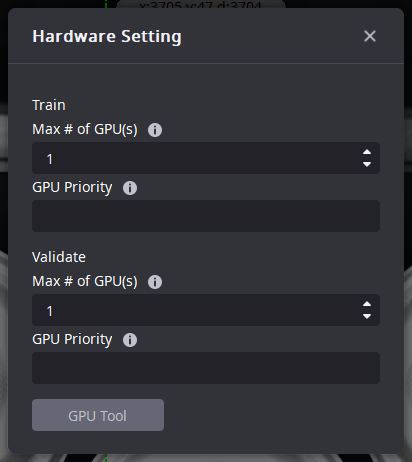
初始化
● 默認工作區選擇：此步驟目的是讓用户選擇一个默認存儲路徑作為初始工作區
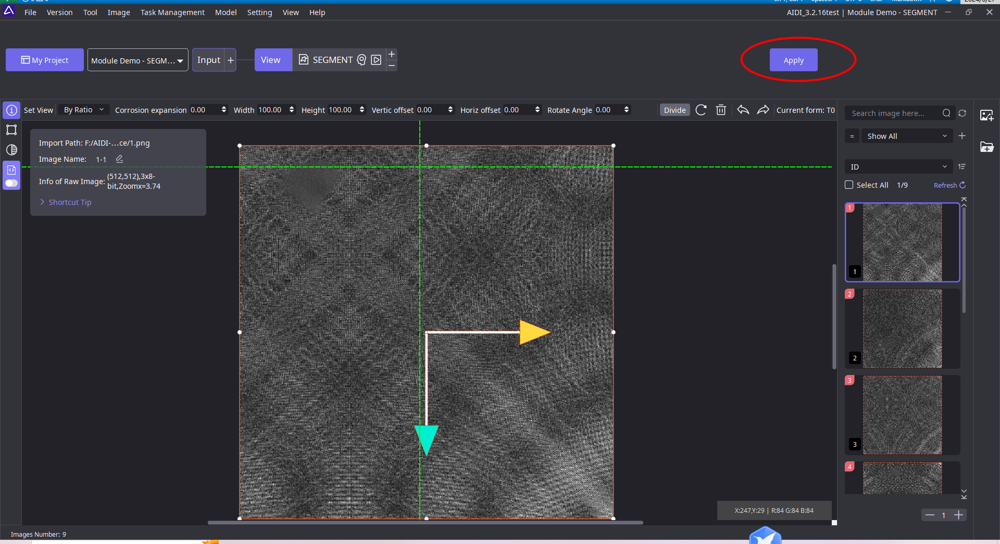
● 進入加載頁面
● 進入主介面
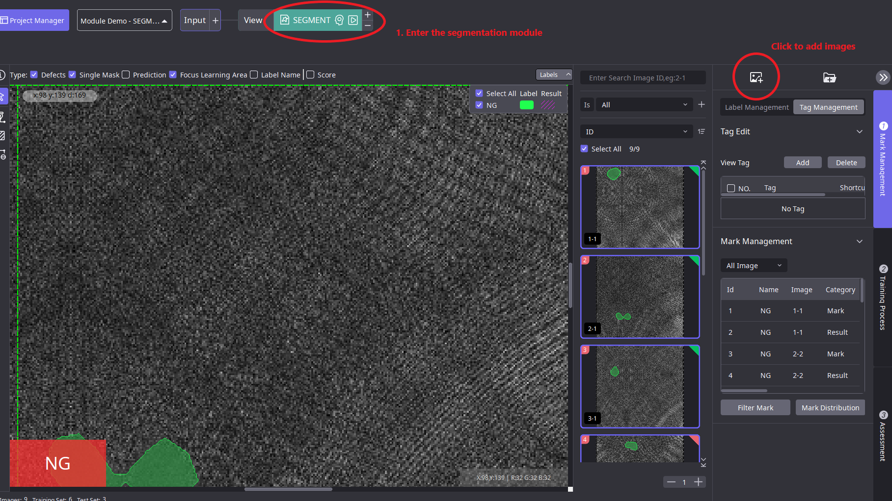